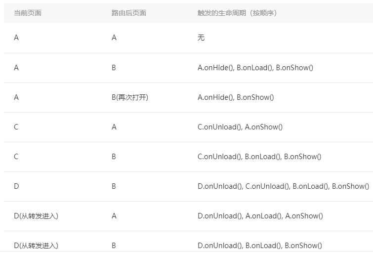

6. 页面跳转和路由
一个小程序拥有多个页面，我们可以通过wx.navigateTo推入一个新的页面，如图3-6所示，在首页使用2次wx.navigateTo后，页面层级会有三层，我们把这样的一个页面层级称为页面栈。
图3-6 使用2次wx.navigateTo后的页面栈
后续为了表述方便，我们采用这样的方式进行描述页面栈：[ pageA, pageB, pageC ]，其中pageA在最底下，pageC在最顶上，也就是用户所看到的界面，
需要注意在本书编写的时候，小程序宿主环境限制了这个页面栈的最大层级为10层 ，也就是当页面栈到达10层之后就没有办法再推入新的页面了。我们下面来通过上边这个页面栈描述以下几个和导航相关的API。
使用 wx.navigateTo({ url: 'pageD' }) 可以往当前页面栈多推入一个 pageD，此时页面栈变成 [ pageA, pageB, pageC, pageD ]。
使用 wx.navigateBack() 可以退出当前页面栈的最顶上页面，此时页面栈变成 [ pageA, pageB, pageC ]。
使用 wx.redirectTo({ url: 'pageE' }) 是替换当前页变成pageE，此时页面栈变成 [ pageA, pageB, pageE ]，当页面栈到达10层没法再新增的时候，往往就是使用redirectTo这个API进行页面跳转。
小程序提供了原生的Tabbar支持，我们可以在app.json声明tabBar字段来定义Tabbar页（注：更多详细参数见Tabbar官方文档 ）。
代码清单3-14 app.json定义小程序底部tab
{
"tabBar": {
"list": [
{ "text": "Tab1", "pagePath": "pageA" },
{ "text": "Tab1", "pagePath": "pageF" },
{ "text": "Tab1", "pagePath": "pageG" }
]
}
}
我们可以在刚刚的例子所在的页面栈中使用wx.switchTab({ url: 'pageF' })，
此时原来的页面栈会被清空（除了已经声明为Tabbar页pageA外其他页面会被销毁），
然后会切到pageF所在的tab页面，页面栈变成 [ pageF ]，
此时点击Tab1切回到pageA时，pageA不会再触发onLoad，因为pageA没有被销毁。
补充一下，wx.navigateTo和wx.redirectTo只能打开非TabBar页面，wx.switchTab只能打开Tabbar页面。
我们还可以使用 wx. reLaunch({ url: 'pageH' }) 重启小程序，并且打开pageH，此时页面栈为 [ pageH ]。表3-5罗列了详细的页面路由触发方式及页面生命周期函数的对应关系。
表3-5 页面路由触发方式及页面生命周期函数的对应关系
路由方式 触发时机 路由前页面生命周期 路由后页面生命周期
初始化 小程序打开的第一个页面 onLoad, onShow
打开新页面 调用 API wx.navigateTo onHide onLoad, onShow
页面重定向 调用 API wx.redirectTo onUnload onLoad, onShow
页面返回 调用 API wx.navigateBack onUnload onShow
Tab 切换 调用 API wx.switchTab 请参考表3-6 请参考表3-6
重启动 调用 API wx.reLaunch onUnload onLoad, onShow
Tab 切换对应的生命周期（以 A、B 页面为 Tabbar 页面，C 是从 A 页面打开的页面，D 页面是从 C 页面打开的页面为例）如表3-6所示，注意Tabbar页面初始化之后不会被销毁。
表3-6 页面路由触发方式及页面生命周期函数的对应关系

当前页面 路由后页面 触发的生命周期（按顺序）
A A 无
A B A.onHide(), B.onLoad(), B.onShow()
A B(再次打开) A.onHide(), B.onShow()
C A C.onUnload(), A.onShow()
C B C.onUnload(), B.onLoad(), B.onShow()
D B D.onUnload(), C.onUnload(), B.onLoad(), B.onShow()
D(从转发进入) A D.onUnload(), A.onLoad(), A.onShow()
D(从转发进入) B D.onUnload(), B.onLoad(), B.onShow()
最后一次编辑于 2019年08月19日 （未经腾讯允许，不得转载）